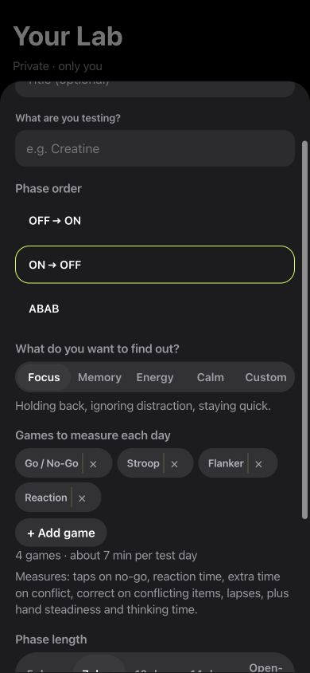

Inside LabRats
Review the games behind your question.
The real New experiment sheet shows phase order, question choices and selected games. Its measurement description explains what those games contribute.
In this Focus selection, the list includes Go / No-Go, Stroop, Flanker and Reaction. Review it before starting so the comparison matches your intended question.
Set up your comparison in the actual app
- Open Lab and tap + New under Your experiments.
- Name what you are recording and choose the phase order.
- Choose Focus, Memory, Energy, Calm or Custom, then review the suggested games.
- Set the phase length and start date before beginning.
Keep entries in the supplement journal, nootropic log or peptide journal consistent with what actually happened. A planned schedule and a logged event are different records.
Start with an everyday question
For example: “How do my results compare when I play before breakfast versus after my usual breakfast?” Name the comparison, choose the tasks and decide which measurements will matter. This is a planning example, not a prediction of an effect.
Change as little else as practical. Keep the phone, task format and recording routine consistent. If you change those too, note them. The point is to make the eventual comparison understandable, including a result that shows little difference.
If your question concerns a supplement or nootropic, write down the comparison without using the plan as a product or treatment recommendation.
What does N-of-1 mean?
An N-of-1 trial studies one person through planned repeated comparisons. Formal trials can involve repeated crossover periods, randomisation and blinding. A personal journal or a simple before-and-after comparison does not automatically meet that design.
LabRats offers tools for a personal comparison; using them does not make the result a controlled clinical trial. The CENT reporting statement explains the more specific design and reporting of formal N-of-1 trials.
A plan you can read later
- Question: write down the comparison in plain language.
- Measurements: pick tasks relevant to that question.
- Schedule: define the days or phases before reviewing outcomes.
- Context: record sleep, timing and unusual changes.
- Review: include all relevant days and check missing observations.
Do not choose the end of a comparison just because today looks good. If the original plan becomes impractical, keep a note of what changed rather than presenting a revised plan as the original one.
Read differences in their own units
A reaction-time difference belongs in milliseconds. A sequence-memory difference belongs in the task’s sequence units. Speed and accuracy need to be read together. LabRats personal results show named measurements, the observations behind them and an unclear outcome when the record does not support a clear distinction.
Small amounts of data, changing conditions and practice can limit the answer. You can describe a difference between the recorded days without claiming the routine caused it.
Choose response timing, sequence-memory results or attention timing and errors according to the question, rather than adding every game to every plan.
Personal results and Shared Labs
A personal experiment concerns your own record. Shared Labs add a group space and shared challenges, subject to their access and sharing rules. Agreement between people can be interesting, but the participants may still differ in routines, devices and how they played.
LabRats does not design treatment changes or determine whether a substance is safe. Use it for organising a question and observations, with the limits of the comparison kept visible.